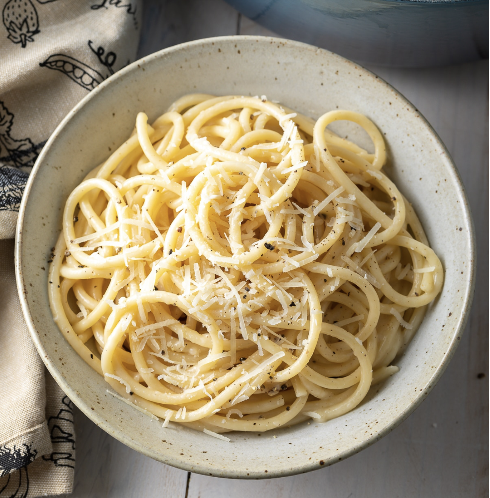

Spaghetti Cacio e Pepe

Description
Cacio e pepe recipe is a quick and tasty Roman dish. The origin of this recipe is very ancient. The secret of cacio e pepe is the creamy sauce, obtained combining best quality Pecorino Romano and a few spoons of the water used to cook the spaghetti. The cheese and the starch into the cooking water are the only ingredients to make the original cacio e pepe sauce, forget butter or cream!
Items
- 1 pound spaghetti
- 6 tablespoons olive oil
- 2 cloves garlic, minced
- 2 teaspoons ground black pepper
- 1¾ cups grated Pecorino Romano cheese
Steps
- Bring a large pot of lightly salted water to a boil. Cook spaghetti in the boiling water, stirring occasionally until tender yet firm to the bite, about 10 minutes. Scoop out some of the cooking water and reserve. Drain spaghetti.
- Heat oil in a large skillet over medium heat. Add garlic and pepper; cook and stir until fragrant, 1 to 2 minutes. Add spaghetti and Pecorino Romano cheese. Ladle in 1/2 cup of reserved cooking water; stir until cheese is melted, about 1 minute. Add more cooking water until sauce coats spaghetti, about 1 minute more.